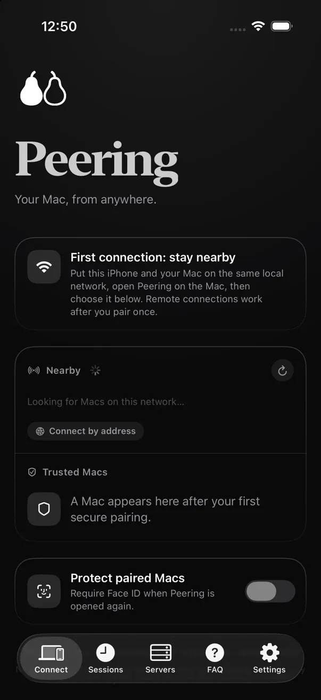
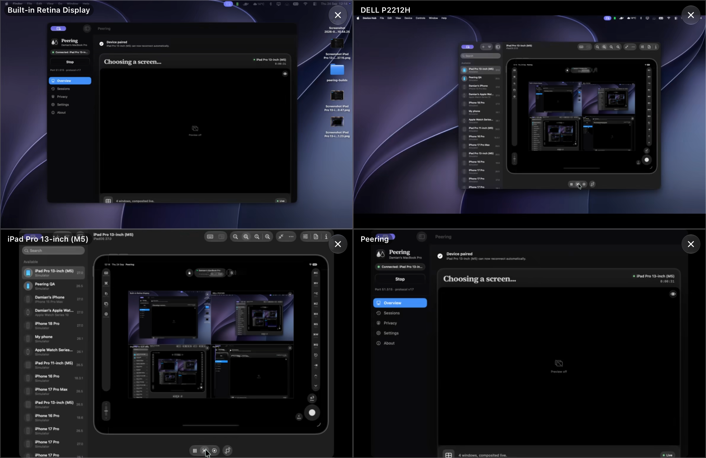

See its screen on your iPhone and drive it, from the next room or the next country.

Open Peering on the Mac and pick it on the iPhone. Both screens show the same six digits. Confirm them, and the two remember each other.
After pairing, the two find each other from anywhere. The picture goes straight between them whenever the network allows, and the app tells you which way it went.
Each one makes its own key and keeps it in its own Keychain. When a relay has to carry the picture, it copies bytes it cannot read.
Share any display, a single app, or one window, and switch without reconnecting. Or put several side by side, each one live.

Unmetered, forever. Relay plans for reaching your Mac from anywhere start at $2.99 a month.
A password prompt, a permission request from a coding agent, a build that is done. The banner arrives with the app closed.
Full-screen terminal sessions with escape, control, arrows and word-at-a-time movement. Answer, and get back to your day.
Add a host over SSH. Its keys are checked the first time, and it can carry its own lock. Walk its folders, edit a config, run a script.
Terminal, SSH and file browsing are free. Shell alerts come with Relay, from $2.99 a month.